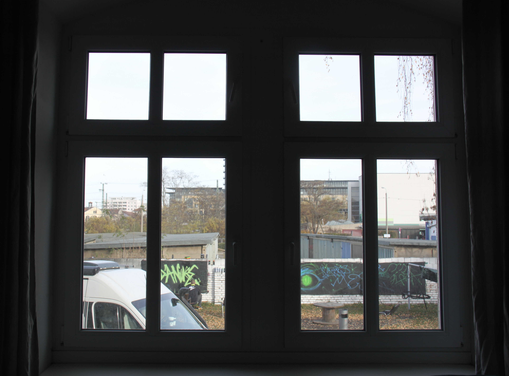
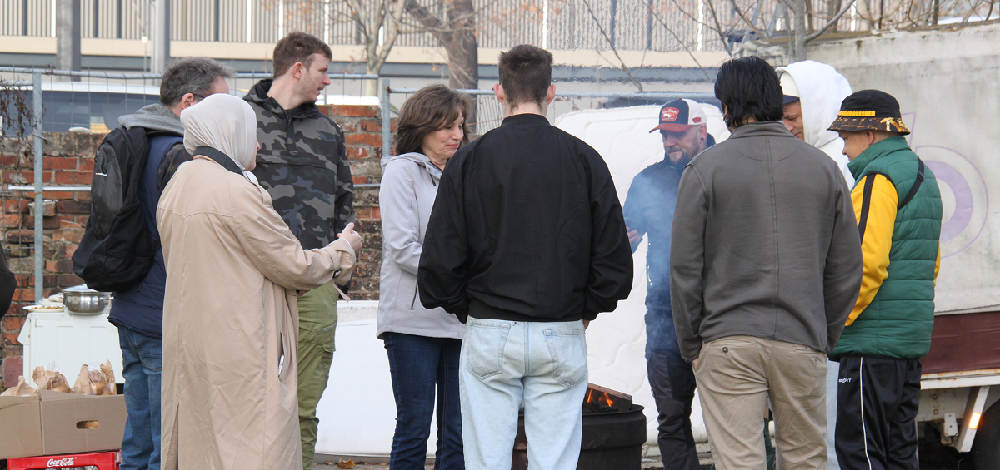

JEDER BRAUCHT
EIN ZUHAUSE
Wohnungslosigkeit
Ist es für Sie vorstellbar, ein. zwei. drei oder sogar zehn Jahre ohne Wohnung zu leben? Zunächst
finden
Sie vielleicht noch Unterschlupf bei Freunden oder Verwandten, doch im Laufe der Zeit wird Ihnen
bewusst, dass Sie Ihre Mitmenschen stören. Und Sie machen sich auf den Weg...
Menschen, die - häufig nach langer Odyssee - in einem Heim landen, haben um ihr Überleben gekämpft, sind
erschöpft, aufgerieben und haben oft unglaubliche Geschichten erlebt. Wie Franzi, die in
Papiercontainern schlief, um nicht zu erfrieren; Lothar, der verwitwete Lehrer, dessen Lager im Park war
oder Oskar und andere Jugendliche, die nach Heimerziehung auf der Straße stehen und nicht wissen, wie
und wo es weitergehen soll...


Wohnungslosigkeit bringt gravierende Entbehrungen mit sich, und auf lange Sicht macht sie
krank. Die
Betroffenen weisen im Vergleich zur Durchschnittsbevölkerung ein Vielfaches an körperlichen oder
seelischen Erkrankungen auf. Sie leben in ständiger Gefahr, Gewalt zu erfahren und werden von der
gesellschaftlichen Mitte gemieden. Alkohol oder Drogen sind keine empfehlenswerten Unterstützer, aber
sie können das Leben erträglicher machen. Wohnungslosigkeit hat gravierende Auswirkungen auf das Leben
eines Menschen. es ist nicht so leicht, wieder in die Gesellschaft zurückzukommen, wie
man
vielleicht denkt. Einige ehemals wohnungslose Menschen haben Bücher über ihre Erfahrungen auf der Straße
und die schwere Rückkehr in die Gesellschaft geschrieben.
Wir empfehlen Ihnen diese Autoren und Bücher:
